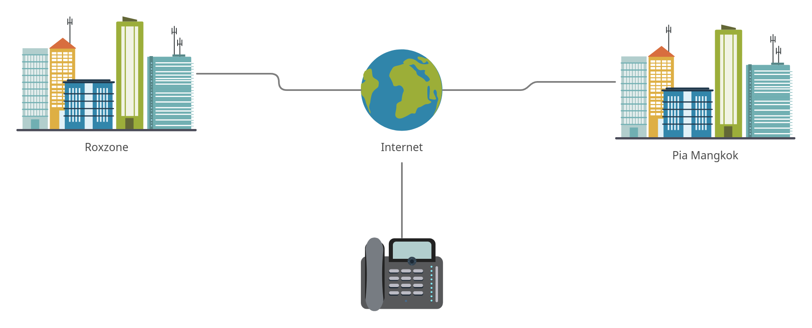
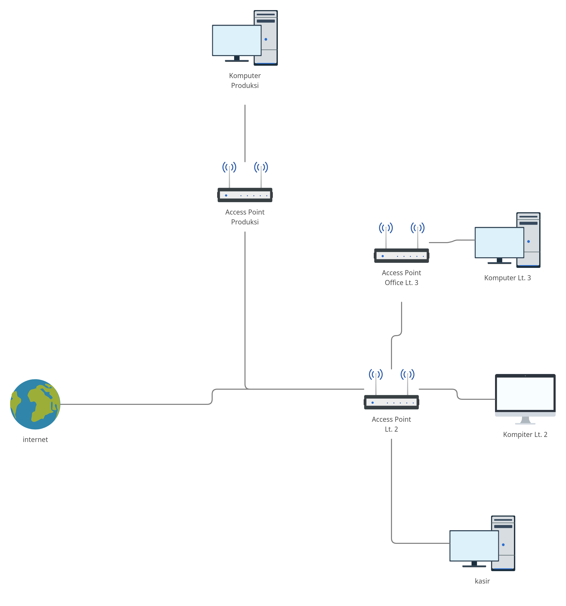
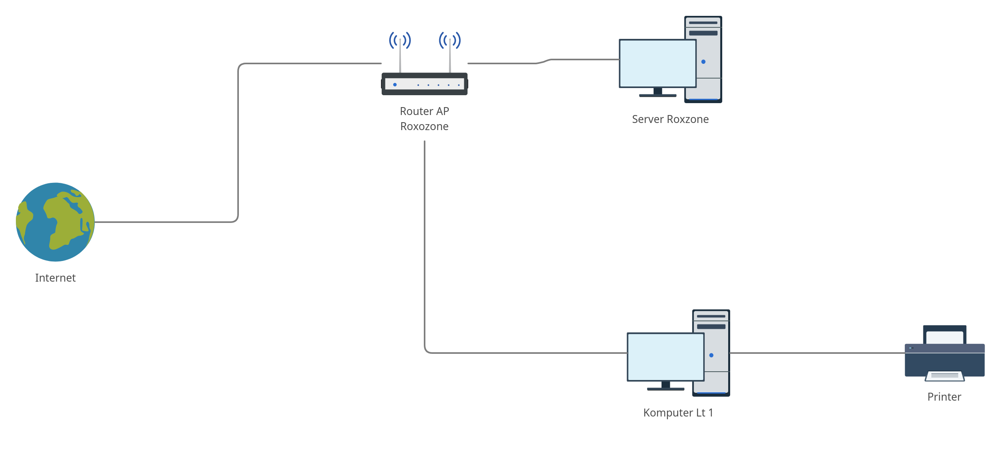

Documentation
Pekerjaan Staff IT PIA Mangkok
- Version: 1.0
- Writer: Dhimas Eka
- Created: 21 Oktober, 2021
- Update: 21 Oktober, 2021
Point Of Sales
Merupakan Project yang difungsikan untuk merekam transaksi di Pia Mangkok
- Project ini menggunakan sistem PHP Laravel dan Front-end nya menggunakan JQuery
- Beberapa pengembangan yang dibutuhkan untuk project ini
Relational Database- Beberapa kode masih menggunakan system Query Builder, untuk kedepannya diharapkan menggunakan sistem EloquentLanguage User- Ada beberapa bahasa user yang mungkin perlu diperbaiki agar pengguna paham tentang penggunaan aplikasi ini.Template- Untuk templatenya menggunaka Metronics 7, jika ingin mengetahui lebih detail tentang tema ini dapat diakses di sini.Javascript- Javascript yang digunakan masih menggunakan Javascript JQuery, diharapkan kedepannya menggunakan Vue-JSFlutter- Project ini diharapkan dapat diimplementasikan di Android dengan bahasa Flutter dan dapat dicetak receipt-nya via bluetooh-receiptDatabase- Database yang digunakan MySQL, sudah masuk seluruh databasenya di migrationnya.
- Menu yang sudah di Point Of Sales
Dashboard- Menampilkan transaksi penjualan per hari / per tahunAdjustment- Berfungsi untuk adjust barang di toko atau di gudangPurchase Orders- Berfungsi untuk data barang yang sudah di POPoint Of Sales- Berfungsi untuk input transaksi penjualanAssembly- Mengatur Data Perakitan BarangReports- Cetak Laporan PenjualanWarehouse- Data Gudang / TokoStok- Data Stok ProdukProduk- Data Produk
Accounting
Merupakan Project yang ditujukan untuk perekaman data transaksi keuangan
- Project ini merupakan bagian dari ERP, tujuan dari project ini sebagai perekaman transaksi dari POS dan merekapitulasi laporan keuangan perusahaan.
- Beberapa pengembangan yang dibutuhkan untuk project ini
- Project ini hampir sama seperti Point Of Sales, hanya dibutuhkan penggabungan dari project POS
- Untuk referensi bahan pengembangan dari project ini dari aplikasi Akaunting
- Project ini hampir sama seperti Point Of Sales, hanya dibutuhkan penggabungan dari project POS
CRM
Merupakan Project yang ditujukan untuk merekam data pembelian customer
- Project ini merupakan bagian dari ERP, tujuan dari project ini sebagai alat perekaman data customer untuk riset marketing
- Beberapa pengembangan yang dibutuhkan untuk project ini
- Project ini hampir sama strukturalnya, hanya dibutuhkan penggabungan antara project POS dan Accounting.
- Pengembangan project ini membutuhkan analisa system pihak marketing
- Untuk bahasa nya menggunakan Laravel
- Project ini hampir sama strukturalnya, hanya dibutuhkan penggabungan antara project POS dan Accounting.
Notes
Pengembangan ERP
- Project ERP selalu membutuhkan perkembangan setiap saat, beberapa project ini sudah ada Inventory, POS, Assembly, dll
- Diharapkan Project ERP sistem-nya setara dengan SAP
- Beberapa masih perlu direvisi dan dibutuhkan analisa system dilapangan lebih lanjut
- Beberapa hal yang dibutuhkan dalam pengembangan system meliputi
Assembly / Perakitan- Untuk Project ini analisa systemnya harus mengetahui alur dari bahan mentah sampai bahan jadi, hal ini dapat dianalisa di bagian produksiHR- HR atau Human Resource, tujuan dari project ini sebagai system dari HRD, dan alurnya dapat dianalisa ke pihak HRD
SEO
Search Engine Optimization, merupakan optimasi website agar mendapat ranking teratas
YOAST SEO
Merupakan plugin wordpress sebagai acuan untuk optimasi artikel atau kata sebagai pengembangan SEO.
- Plugin ini sudah terpasang di wordpress Piata Camilan
- Untuk dokumentasi lengkapnya mengenai Yoast SEO dapat dilihat di sini
Backlink
Sebuah tautan yang mengarah ke sebuah situs, tujuan dari backlink yaitu untuk meningkatkan peringkat website, hal ini juga sebagai salah satu bagian SEO.
- Referensi mengenai apa itu backlink, bagaiamana membuatnya dapat di research di google
- Catatan
- Semakin bagus menaruh backlinknya di website yang berkualitas, maka SERP website akan semakin naik
- Perbanyak penanaman backlink agar website anda tetap diperingkat teratas
Blogspot
Beberapa Optimasi dilakukan di blogspot juga, seperti membuat post dan penanaman backlinknya.
- Hal - hal yang harus diterapkan diblogpsot
- Memasang gambar di blogspot dan alt-nya
- Melakukan crawling data di postnya
- Menuliskan judul dan paragraf nya yang sudah diriset keywordnya.
Wordpress
Wordpress adalah Website Dinamis berbasis CMS. Websitenya Piata Camilan
Beberapa keterangan untuk wordpress
- Web dihosting di Niagahoster
Plugin
Berfungsi sebagai memperkaya fungsi serta fitur pada website
- Catatan
- Pasang plugin sesuai dengan kebutuhan, jika tidak butuh silahkan uninstall
- Untuk memasang atau menguninstall plugin dapat dilihat disini
Post
Tujuan Post di Wordpress sebagai langkah Search Engine Optimization web piatacamilan
- Langkah - langkah yang harus diterapkan
- Buat Artikel Judul yang sudah diriset secara keyword
- Untuk riset keyword bisa menggunakan tools google keyword planner atau semrush
Management Users
Tujuan Post di Wordpress sebagai langkah Search Engine Optimization web piatacamilan
- Langkah - langkah yang harus diterapkan
- Buat Artikel Judul yang sudah diriset secara keyword
- Untuk riset keyword bisa menggunakan tools google keyword planner atau semrush
Management Jaringan
Penjelasan mengenai skema jaringan di pia
- Langkah - langkah yang harus diterapkan
- Buat Artikel Judul yang sudah diriset secara keyword
- Untuk riset keyword bisa menggunakan tools google keyword planner atau semrush
Skema Jaringan
Skema Jaringan Luar
- Catatan
- Untuk skema jaringan perusahaan tampak luar terhubung dengan dua kantor, pertama kantor Roxzone dan kedua kantor Pia Mangkok
Skema Jaringan Dalam Pia Mangkok
- Catatan
- Skema Jaringan Dalam di Pia Mangkok terdiri dari 3 lantai
- Lantai 1
- Terdapat 1 Komputer Kasir
- Komputer kasir terhubung ke access point Lt. 2
- Komputer kasir terhubung ke aplikasi zahir
- Lantai 2
- Terdapat 3 Komputer di lantai 2
- Access Point di Lantai 2 merupakan access point pusat di Pia Mangkok sekaligus menjadi router utama
- Terdapat sharing printer dengan system printer langsung terhubung ke jaringan dan mendapatkan IP sendiri
- Untuk server zahir di Lantai 2 (komputer dengan spesifikasi i3)
- Seluruh komputer terinstall aplikasi zahir
- Lantai 3
- Terdapat 1 access point dan 2 komputer
- Printer di lantai 3 menggunakan system sharing via komputer (menggunakan perantara)
- Seluruh komputer terhubung dengan aplikasi zahir
- Produksi
- Terdapat 2 komputer dan 1 access point di produksi
- 1 Komputer terhubung dengan aplikasi zahir
- Roxzone memiliki 2 lantai
- Lantai 1
- Memiliki 2 komputer langsung terhubung ke access point pusat
- Lantai 2
- Memiliki 1 komputer server linux ubuntu
- Memiliki Access Point Router
Skema Jaringan Roxzone
Catatan
Troubleshooting
Beberapa troubleshooting yang sering dialami
- Jaringan Crash
- Router pusat sering panas
Solusi
- Jangan gunakan mode Access Point untuk setting AP baru, biarkan tetap default, disarankan untuk menambahkan hub agar tidak terjadi crash jaringan. Hal ini terjadi jika mode AP digunakan secara terpusat tidak terdistribusi
- Lepas daya listrik selama 1-2 menit, pasang lagi dan cek AP apakah sudah ada internet, kalau lebih simpel via hp apakah access internet sudah ada atau belum
Hardware
Beberapa troubleshoooting yang sering dialami di PC atau Printer
Troubleshooting PC
- PC Lambat disebabkan aplikasi
- Penyebab disebabkan beberapa faktor
- Aplikasi Google Chrome
- Aplikasi ini memakan banyak ram dan tidak direkomendasikan
- Banyaknya aplikasi berjalan dibelakang layar
- Hal ini menyebabkan komputer berjalan lambat, untuk solusinya dapat dicek disini
- Pasta Processor sudah habis dan Time to Cleaning
- Bersihkan komputer dengan compressor atau kuas kecil
- Repasta processor
- PSU tidak dapat mengubah arus AC ke DC
- Ganti dengan PSU baru
Troubleshooting Printer
- Printer di Pia Mangkok dan Roxzone berbasis laser semua
- Masalah yang kerap dihadapi biasanya kertas nyangkut
Catatan
- Seluruh project yang berkaitan dengan pia mangkok "coding" akan dipindah ke akun github ini.
- untuk seluruh catatan assets dan akun - akun yang sudah dibuat akan ditaruh di drive google
- untuk akun loginnya akan diserahkan saat serah terima pekerjaan